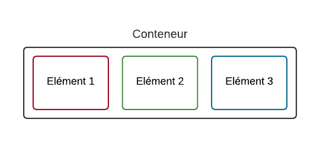

Un Conteneur, des éléments
Le principe de la mise en page avec Flexbox est simple : vous définissez un conteneur, et à l'intérieur vous placez plusieurs éléments. Imaginez un carton dans lequel vous rangez plusieurs objets : c'est le principe !
Sur une même page web, vous pouvez sans problème avoir plusieurs conteneurs (plusieurs cartons, si vous préférez). Ce sera à vous d'en créer autant que nécessaire pour obtenir la mise en page que vous voulez.
Commençons par étudier le fonctionnement d'un carton (euh pardon, d'un conteneur).

Le conteneur est une balise HTML, et les éléments sont d'autres balises HTML à l'intérieur
Par exemple avec:
<div id='conteneur' style='background-color: white; border: 2px solid black; padding: 20px;'>
<div class='element 1' style='background-color: red; width: 20%; padding: 10px;'>Element 1 </div>
<div class='element 2' style='background-color: green; width: 20%; padding: 10px;'>Element 2 </div>
<div class='element 3' style='background-color: blue; width: 20%; padding: 10px;'>Element 3 </div>
</div>
Soyez Flex!
Découvrons maintenant Flexbox. Si je mets une (une seule !) propriété CSS, tout change. Cette propriété, c'est flex, voyons ce qu'il se passe si on l'applique au conteneur :
#conteneur
{
display: flex;
}
La direction
Flexbox nous permet d'agencer ces éléments dans le sens que l'on veut. Avec flex-direction , on peut les positionner verticalement ou encore les inverser. Il peut prendre les valeurs suivantes :
-row : organisés sur une ligne (par défaut) ;
-column : organisés sur une colonne ;
-row-reverse : organisés sur une ligne, mais en ordre inversé ;
-column-reverse : organisés sur une colonne, mais en ordre inversé.
Exemple :
#conteneur
{
display: flex;
flex-direction: column;
}
Essayons de tester l'ordre inversé maintenant, pour voir:
#conteneur
{
display: flex;
flex-direction: column-reverse;
}
Le retour à la ligne
Par défaut, les blocs essaient de rester sur la même ligne s'ils n'ont pas la place (ce qui peut provoquer des bugs de design, parfois). Si vous voulez, vous pouvez demander à ce que les blocs aillent à la ligne lorsqu'ils n'ont plus la place, avec flex-wrap qui peut prendre ces valeurs:-nowrap : pas de retour à la ligne (par défaut) ;
-wrap : les éléments vont à la ligne lorsqu'il n'y a plus la place ;
-wrap-reverse : les éléments vont à la ligne, lorsqu'il n'y a plus la place, en sens inverse.
Voici l'effet que prennent les différentes valeurs:
#conteneur
{
display: flex;
flex-wrap: nowrap;
}
flex-wrap: wrap; :
flex-wrap: wrap-reverse;
Alignez-les !
Les propriétés flexbox
display: flex/inline-flex;
C'est ainsi qu'on définit un container flex, il est block par défaut ou inline selon la valeur donnée. Cela crée un contexte flex pour tous les descendants directs.
-flex : Cette valeur génère un container flex, de niveau block, à l'intérieur de l'élément.
-inline-flex : Cette valeur génère un container flex, de niveau inline, à l'intérieur de l'élément.
Notez que :
les propriétés columns- du module multi-colonnes n'ont pas d'effet sur un container flex float, clear et vertical-align n'ont pas d'effet sur un item flex.
Pour comprendre en se divertissant, le mieux est de jouer avec ces valeurs sur des outils en ligne tels que flexplorer
flex-direction: row / row-reverse / column / column-reverse;
La propriété flex-direction établit l'axe principal.
-row (valeur par défaut): les éléments sont placés en ligne de gauche à droite.
-row-reverse : inverse le sens.
-column : les éléments sont placés en colonnes du haut vers le bas.
-column-reverse : inverse le sens.
flex-wrap: nowrap / wrap / wrap-reverse;
Cette propriété définit si le container comprend une seule ligne ou plusieurs et la direction sur l'axe perpendiculaire (cross-axis), qui détermine la direction dans laquelle les nouvelles lignes seront empilées.
-nowrap : (valeur par défaut) sur une seule ligne, de gauche à droite dans un système ltr, sinon l'inverse. La ligne peut déborder de son contenant.
-wrap : multiligne, de gauche à droite dans un système ltr, sinon l'inverse. Pas de débordement, on passe à la ligne.
-wrap-reverse : multiligne, de droite à gauche dans un système ltr, sinon l'inverse.
justify-content: flex-start / flex-end / center / space-between / space-around;
La propriété justify-content définit l'alignement le long de l'axe principal.
Elle permet de distribuer l'espace excédentaire lorsque tous les items flex sur une ligne sont inflexibles ou lorsqu'ils ont atteint leur taille maximale.
Elle contrôle aussi l'alignement des items lorsqu'ils débordent.
-flex-start (par défaut) : les items sont regroupés en début de ligne
-flex-end : les items sont regroupés en fin de ligne
-center : les items sont centrés le long de la ligne
-space-between : les items sont répartis sur la ligne; le premier est collé du côté start, le dernier du côté end.
-space-around : les items sont répartis sur la ligne avec un espacement égal autour de chacun.
align-items: stretch / flex-start / flex-end / center / baseline;
Si nos éléments sont placés dans une direction horizontale (ligne), l'axe secondaire est... vertical.
Et inversement : si nos éléments sont dans une direction verticale (colonne), l'axe secondaire est horizontal.
Avec align-items , nous pouvons changer leur alignement sur l'axe secondaire.
stretch : les éléments sont étirés sur tout l'axe (valeur par défaut) ;
flex-start : alignés au début
flex-end : alignés à la fin
center : alignés au centre
baseline : alignés sur la ligne de base (semblable à flex-start)